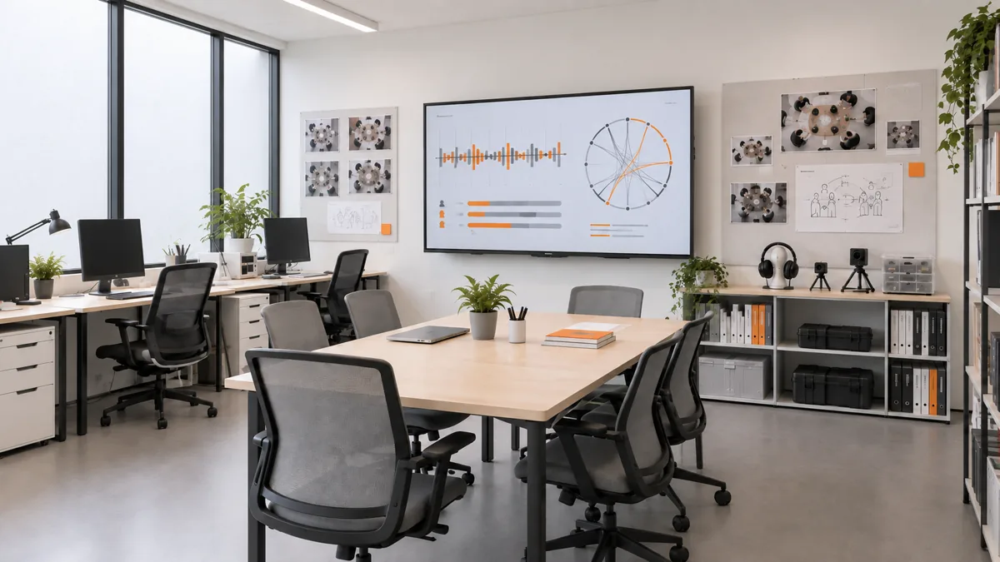
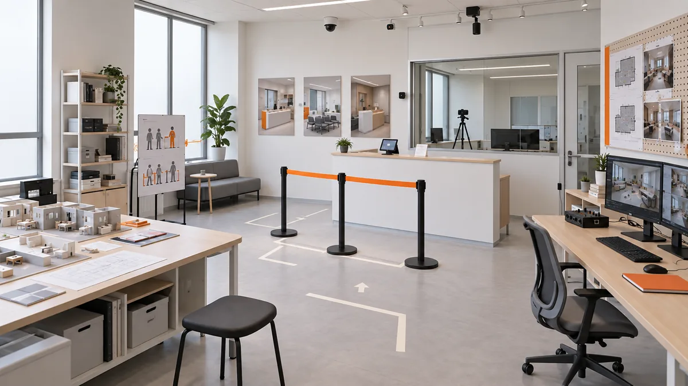
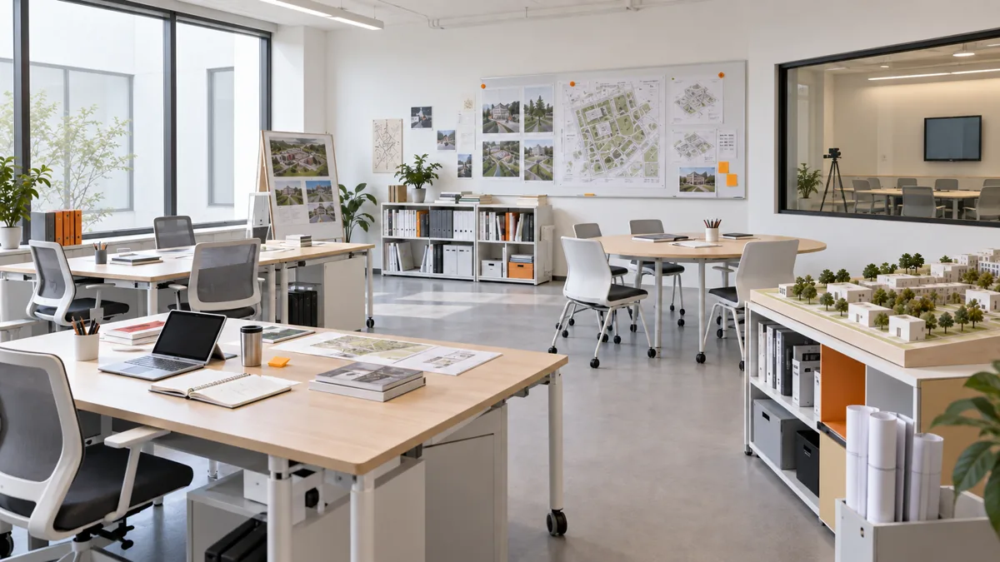
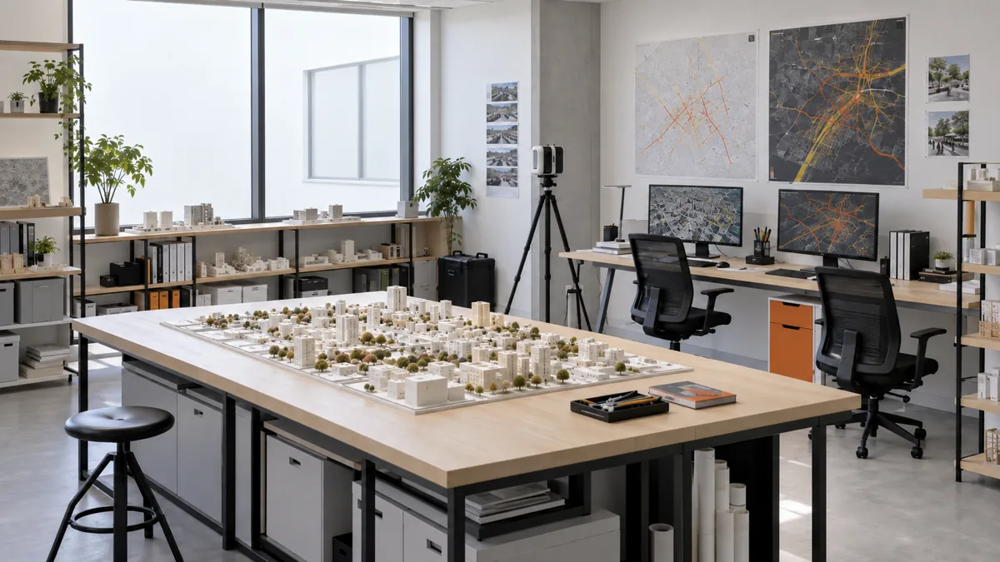
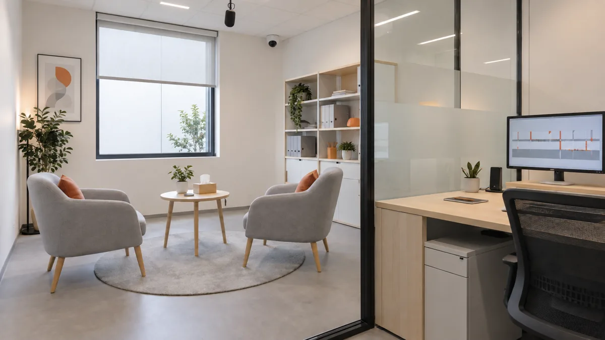

01
기업·기관
조직 상호작용 분석팀
회의, 협업, 조직 커뮤니케이션에서 반복되는 마찰을 측정합니다. 구성원 간 발화 비율과 응답 지연, 자리 배치 데이터를 결합해 더 자연스럽게 일하는 방식을 제안합니다.
- 주요 고객
- 기업 · 공공기관 · 스타트업
- 분석 데이터
- 발화 비율 · 응답 지연 · 자리 배치 · 부서 간 교류
- 제공 결과
- 조직 상호작용 진단 · 회의 방식 개선안
- 계약 방식
- 프로젝트 컨설팅 · 정기 진단
SERVICES / FIELD PRACTICE
BUSINESS MODEL
SAI STUDIO는 관찰에 그치지 않습니다. 현장의 문제를 측정하고, 다음 행동이 만들 변화를 예측해 조직과 공간에 적용합니다.

기업·기관
회의, 협업, 조직 커뮤니케이션에서 반복되는 마찰을 측정합니다. 구성원 간 발화 비율과 응답 지연, 자리 배치 데이터를 결합해 더 자연스럽게 일하는 방식을 제안합니다.

서비스·공간
매장, 병원, 호텔과 문화시설에서 고객과 직원이 마주치는 순간을 연구합니다. 대기와 접근, 동선 충돌을 줄여 편안한 서비스 경험을 설계합니다.

학교·대학
수업 참여부터 팀 활동과 신입생 적응까지 교육 환경의 상호작용을 분석합니다. 학생이 관계를 만들고 학습에 참여하기 쉬운 캠퍼스 경험을 제안합니다.

도시·공공기관
교통시설과 공공 공간에서 발생하는 보행 충돌, 밀집, 회피 행동을 분석합니다. 누구나 이해하고 이용하기 쉬운 운영 방식과 공간 동선을 설계합니다.

개인 의뢰
직장 대화, 친구 관계, 발표처럼 반복적으로 어려움을 느끼는 상황을 행동 데이터로 살펴봅니다. 상담이 아닌 관찰과 시뮬레이션을 통해 구체적인 대응 선택지를 제공합니다.
PROJECT INQUIRY